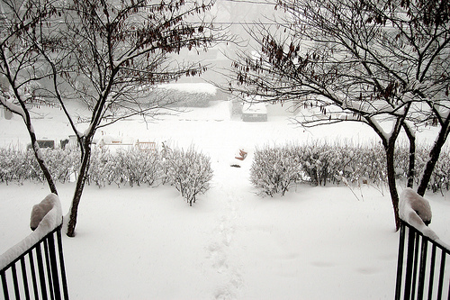

An external sheet can be written in any text editor. The file must not contain any HTML code, and must be saved with a .css extension.
An external style sheet can be written in any text editor. The file must not contain any HTML code, and must be saved with a .css extension.An external style sheet can be written in any text editor. The file must not contain any HTML code, and must be saved with a .css extension.An external style sheet can be written in any text editor. The file must not contain any HTML code, and must be saved with a .css extension.An external style sheet can be written in any text editor. The file must not contain any HTML code, and must be saved with a .css extension.An external style sheet can be written in any text editor. The file must not contain any HTML code, and must be saved with a .css extension.An external style sheet can be written in any text editor. The file must not contain any HTML code, and must be saved with a .css extension.An external style sheet can be written in any text editor. The file must not contain any HTML code, and must be saved with a .css extension.An external style sheet can be written in any text editor. The file must not contain any HTML code, and must be saved with a .css extension.An external style sheet can be written in any text editor. The file must not contain any HTML code, and must be saved with a .css extension.An external style sheet can be written in any text editor. The file must not contain any HTML code, and must be saved with a .css extension.An external style sheet can be written in any text editor. The file must not
| Firstname | Lastname | Age |
|---|---|---|
| Eve | Jackson | 94 |
{kind=link}